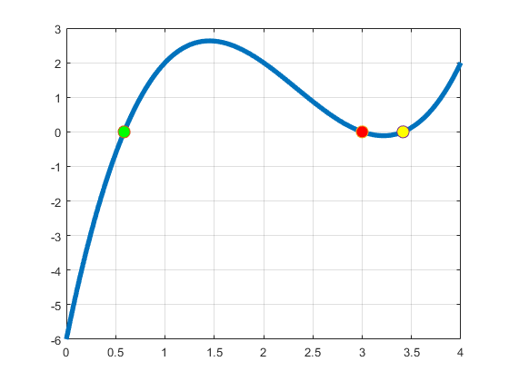
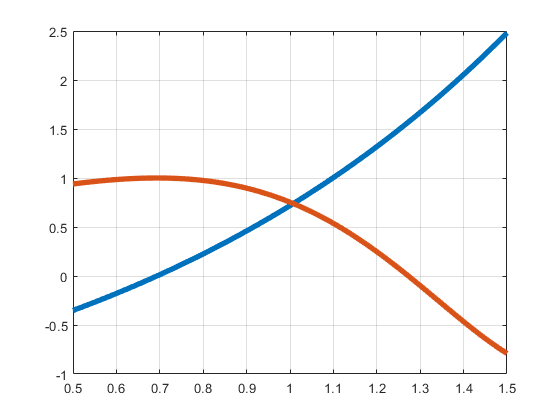
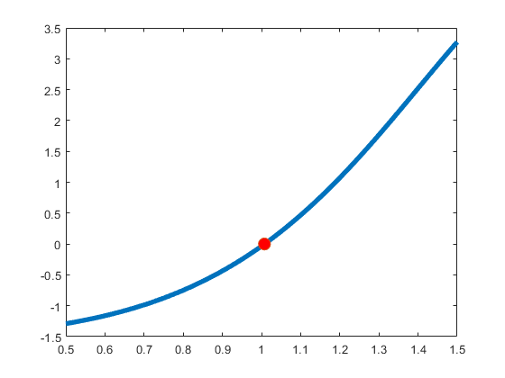
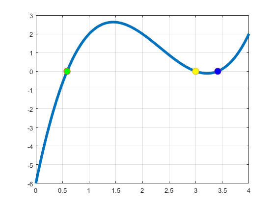

Contents
Exercitiul 1
f1=inline('8*x.^3+4*x-1','x');
a0=0
b0=1
x0=(a0+b0)/2
f1(x0)*0
disp('f1(x0)*f(a0)<0')
a1=a0
b1=x0
x1=(a1+b1)/2
f1(x1)*f1(a1)
disp('f1(x1)*f1(a1)<0')
a2=a1
b2=x1
x2=(a2+b2)/2
f1(x2)*f1(a2)
x2
a0 =
0
b0 =
1
x0 =
0.5000
ans =
0
f1(x0)*f(a0)<0
a1 =
0
b1 =
0.5000
x1 =
0.2500
ans =
-0.1250
f1(x1)*f1(a1)<0
a2 =
0
b2 =
0.2500
x2 =
0.1250
ans =
0.4844
x2 =
0.1250
Exercitiul 2
f=inline('x.^3-7*x.^2+14*x-6','x');
eps=10^(-5);
x=linspace(0,4,100);
y=f(x);
plot(x,y,'Linewidth',4);
grid on;
hold on;
a=0; b=1;
r1=MetBisectie(f,a,b,eps);
a=1; b=3.2;
r2=MetBisectie(f,a,b,eps);
a=3.2; b=4;
r3=MetBisectie(f,a,b,eps);
plot(r1,f(r1),'o','MarkerFaceColor','g','Markersize',10);
plot(r2,f(r2),'o','MarkerFaceColor','r','Markersize',10);
plot(r3,f(r3),'o','MarkerFaceColor','y','Markersize',10);

Exercitiul 3
figure
y=inline('exp(x)-2','x');
z=inline('cos(exp(x)-2)','x');
x=linspace(0.5,1.5,100);
plot(x,y(x),'LineWidth',4);
hold on;
grid on;
plot(x,z(x),'LineWidth',4);
f2=inline('exp(x)-2-cos(exp(x)-2)','x');
r=MetBisectie(f2,0.5,1.5,eps)
figure
plot(x,f2(x),'LineWidth',4)
hold on
plot(r,f2(r),'o','MarkerFaceColor','r','MarkerSize',10)
r =
1.0076
 
Exercitiul 4
f3=inline('x-sqrt(3)','x');
x=linspace(1,2,1000);
r4=MetBisectie(f3,1,2,eps)
figure
plot(x,f3(x),'LineWidth',4)
grid on;
r4 =
1.7322
Exercitiul 5
disp('Problema consta in faptul ca daca x0=2 se va aproxima catre 3 care nu apartine intervalului')
df=inline('3*x.^2-14*x+14','x');
x=linspace(0,2.5,100);
eps=10^(-3);
a=f(x);
figure
plot(x,a,'LineWidth',4)
grid on;
hold on;
x0=1;
r5=MetNR(f,df,x0,eps)
plot(r5,f(r5),'o','MarkerFaceColor','g','Markersize',10);
Exercitiul 6
x=linspace(0,4,100);
eps=10^(-3);
a=f(x);
figure
plot(x,a,'LineWidth',4)
grid on;
hold on;
x0=1;
r5=MetNR(f,df,x0,eps)
plot(r5,f(r5),'o','MarkerFaceColor','g','Markersize',10);
x0=3;
r6=MetNR(f,df,x0,eps)
plot(r6,f(r6),'o','MarkerFaceColor','y','Markersize',10);
x0=4;
r7=MetNR(f,df,x0,eps)
plot(r7,f(r7),'o','MarkerFaceColor','b','Markersize',10);
r5 =
0.5858
r6 =
3
r7 =
3.4142

Exercitiul 7
g=inline('8*x.^3+4*x-1','x');
dg=inline('24*x.^2+4','x');
figure
x=linspace(0,1,100);
plot(x,g(x),'LineWidth',4)
grid on;
disp('Graficul intersecteaza odata axa Ox , rezulta ca ecuatia are o singura solutie pe intervalul [0,1]')
a=0.1;
b=0.3;
x0=0.2;
x1=0.25;
rez1=MetNR(g,dg,x0,eps)
rez2=MetSecantei(g,a,b,x0,x1,eps)
Graficul intersecteaza odata axa Ox , rezulta ca ecuatia are o singura solutie pe intervalul [0,1]
rez1 =
0.2267
rez2 =
0.2500
Array indices must be positive integers or logical values.
Error in MetPozFalse (line 5)
x(1)=(a(1)*f(b(1))-b(1)*f(a(1)))/(f(b(0))-f(a(0)));
Error in Tema2 (line 142)
r11=MetPozFalse(f8,a,b,eps)
Exercitiul 8
f8=inline('x.^3-18*x-10','x');
figure
x=linspace(-5,5,100);
plot(x,f8(x),'LineWidth',4)
grid on;
hold on;
a=-5; b=-3;
x0=-4; x1=-3.5;
r8=MetSecantei(f8,a,b,x0,x1,eps)
plot(r8,f(r8),'o','MarkerFaceColor','b','Markersize',10);
a=-2; b=1;
x0=-1; x1=0;
r9=MetSecantei(f8,a,b,x0,x1,eps)
plot(r9,f(r9),'o','MarkerFaceColor','r','Markersize',10);
a=4; b=5;
x0=4; x1=5;
r10=MetSecantei(f8,a,b,x0,x1,eps)
plot(r10,f(r10),'o','MarkerFaceColor','g','Markersize',10);
figure
x=linspace(-5,5,100);
plot(x,f8(x),'LineWidth',4)
grid on;
hold on;
a=-5; b=-3;
r11=MetPozFalse(f8,a,b,eps)
plot(r11,f(r11),'o','MarkerFaceColor','g','Markersize',10);
a=-2; b=1;
r12=MetPozFalse(f8,a,b,eps)
plot(r12,f(r12),'o','MarkerFaceColor','r','Markersize',10);
a=4; b=5;
r13=MetPozFalse(f8,a,b,eps)
plot(r13,f(r13),'o','MarkerFaceColor','b','Markersize',10);